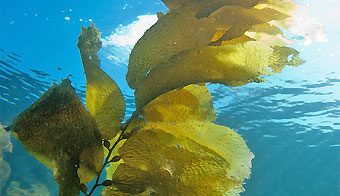

	@@include('_header.html')
	
	<main class="main">
		<!--! Содержимое тега maim должно быть уникальным и не включать типовые блоки вроде -->
		<!--! шапки сайта, подвала, навигации, боковой панели, формы поиска и т. п.         -->

		
		<div class="withbg" style="width: 300px; height:300px;"></div>
		
		
	</main>
	
	@@include('_footer.html')